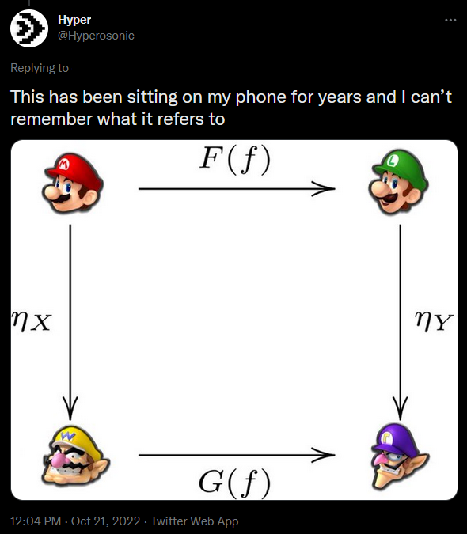

Setting
We will once again visualize the act of ordering food at In-n-Out.
- \(X\): number of fries orders
- \(Y\): number of beef patties ordered
We define the covariance of random variables as
\[\text{Cov}(X,Y) = \text{E}[XY] - \text{E}[X]\text{E}[Y]\]
Correlation
Just like how the \(z\)-score is a standardized and unitless measure, the correlation was designed to be standardized and unitless (i.e. units cancel out).
\[r = \text{Corr}(X,Y) = \displaystyle\frac{ \text{Cov}(X,Y) }{ \sqrt{ \text{Var}(X) \cdot \text{Var}(Y)} }\]
- If \(\text{Var}(X) = 0\), the data \(X\) are constant, and simply return \(r = 0\)
- If \(\text{Var}(Y) = 0\), the data \(Y\) are constant, and simply return \(r = 0\)
- Compute the correlation in the In-n-Out setting
Interpretation of Correlation
Aside: the infinity-sized expected values might happen in continuous distributions.
Early development of the concept of correlation was done by Karl Pearson. Pearson suggested the following interpretations of the correlation (but there is no strict rule for this):
- \(|r| < 0.4\): virtually uncorrelated
- \(0.4 \leq |r| < 0.7\): slightly correlated
- \(0.7 \leq |r| \leq 1.0\): strongly correlated
Examples of Correlation
correlatedValues = function(x, r = 0.9){
r2 = r**2
ve = 1-r2
SD = sqrt(ve)
e = rnorm(length(x), mean=0, sd=SD)
y = r*x + e
return(y)
}
x1 = rnorm(100, mean = 0, sd = 1)
y1 = correlatedValues(x1, r = -0.9)
x2 = rnorm(100, mean = 0, sd = 1)
y2 = correlatedValues(x2, r = -0.4)
x3 = rnorm(100, mean = 0, sd = 1)
y3 = correlatedValues(x3, r = 0.0)
x4 = rnorm(100, mean = 0, sd = 1)
y4 = correlatedValues(x4, r = 0.4)
x5 = rnorm(100, mean = 0, sd = 1)
y5 = correlatedValues(x5, r = 0.9)
df1 <- data.frame(x1, y1, "group 1")
df2 <- data.frame(x2, y2, "group 2")
df3 <- data.frame(x3, y3, "group 3")
df4 <- data.frame(x4, y4, "group 4")
df5 <- data.frame(x5, y5, "group 5")
names(df1) <- c("xdata", "ydata", "group")
names(df2) <- c("xdata", "ydata", "group")
names(df3) <- c("xdata", "ydata", "group")
names(df4) <- c("xdata", "ydata", "group")
names(df5) <- c("xdata", "ydata", "group")
main_df <- rbind(df1, df2, df3, df4, df5)Continuous Joint Probability Distribution Functions
We will once again visualize the act of ordering food at In-n-Out.
- \(X\): number of fries orders
- \(Y\): number of beef patties ordered
with joint PDF
\[f(x,y) = \frac{1}{30}(x + y)e^{-x}e^{-y/5}\]
- Compute the correlation in the In-n-Out setting

Looking Ahead
due Fri., Mar. 17:
- WHW8
- LHW7
Exam 2 will be on Mon., Apr. 10
no lecture on Mar. 24, Apr. 3
 tweet source